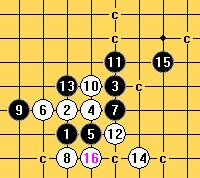

[学术讨论]疏星一个没见过骗10 请问下怎么杀
#1 [学术讨论]疏星一个没见过骗10 请问下怎么杀 作者：笑雨辰 发表时间：2008-11-13 3:09:08
=======上图对应的爱五子棋谱代码如下，以便你拆解：========
h8h9j10i9i8g9j9h7f9k7
======================================================
［此帖子已被 茗弈小刀 在 2009-4-22 20:10:40 编辑过］
#2 Re:疏星一个没见过骗10 请问下怎么杀 作者：笑雨辰 发表时间：2008-11-13 3:11:17
=======上图对应的爱五子棋谱代码如下，以便你拆解：========
h8h9j10i9i8g9j9h7f9k7h10i10j11j8k10i7j7g8g7h6g5i6
======================================================
#3 Re:疏星一个没见过骗10 请问下怎么杀 作者：五子痴 发表时间：2008-11-13 9:37:13
=======上图对应的爱五子棋谱代码如下，以便你拆解：========
h8h9j10i9i8g9j9h7f9k7j11j8h10i7j7h6g5
======================================================
大体变化这样 黑的优势够大了！
#4 Re:疏星一个没见过骗10 请问下怎么杀 作者：五子痴 发表时间：2008-11-13 9:49:30
=======上图对应的爱五子棋谱代码如下，以便你拆解：========
h8h9j10i9i8g9j9h7f9k7h10i10j11j8l11i7j7h6k10m12g5
======================================================
还有这种变化 也不错！优势很大 大概追杀只是时间问题了
#5 Re:疏星一个没见过骗10 请问下怎么杀 作者：卖身打胎 发表时间：2008-11-13 12:56:38
=======上图对应的爱五子棋谱代码如下，以便你拆解：========
h8h9j10i9i8g9j9h7f9k7j11j8h10i10
======================================================
注意此时盘中局面 黑没有VCT而白在下面却有VCT 黑如果再下出一手不能防（反）白VCT或不是做VCF的棋那么就输了
15手推荐I11 之后为黑棋后手必胜
#6 Re:Re:疏星一个没见过骗10 请问下怎么杀 作者：雨一直下 发表时间：2008-11-13 13:32:16
4楼的朋友你米有拆解完的话不要轻易下结论,你贴的那个至21说黑大优,其实白必胜,麻烦认真拆完再发表意见,免得误导初学者吧.

#7 Re:疏星一个没见过骗10 请问下怎么杀 作者：轻舒长袖漫卷风云 发表时间：2008-11-13 17:27:10
各位前辈都好厉害啊,新手上路,请多关照!
#8 Re:疏星一个没见过骗10 请问下怎么杀 作者：笑雨辰 发表时间：2008-11-13 22:47:20
忘记说了
2楼的变化为白胜了
求黑胜变化
#9 Re:疏星一个没见过骗10 请问下怎么杀 作者：五子痴 发表时间：2008-11-14 11:44:44
在这里没有什么误导不误导的 谁也没说自己的就是肯定对的 贴出来就是供讨论的 真理是越辩越明！
大家加油吧 离答案又前进了一步 
#10 Re:疏星一个没见过骗10 请问下怎么杀 作者：茗弈小刀 发表时间：2008-11-14 12:33:00
我想扫地僧的棋力是三手的朋友有目共睹的吧，论坛就是大家交流讨论的地方，都是人不是神，6楼的朋友误导用得不合时宜。#11 Re:疏星一个没见过骗10 请问下怎么杀 作者：快乐天羽 发表时间：2008-11-14 14:37:58
11走2上边，12应该是4上边，然后13走9左下角。黑大优，走好黑可胜。
［ 茗弈小刀 于 2008-11-14 16:13:39 时奖励此帖[金币加 20 威望加1］
#12 Re:Re:疏星一个没见过骗10 请问下怎么杀 作者：yoda 发表时间：2008-11-14 15:52:24
讨论要有认真的态度，尤其是有一定水平的更应该注意。随意和不负责任的下结论不好吧，4楼变化只要稍微认真点就会发现白胜。#13 Re:疏星一个没见过骗10 请问下怎么杀 作者：茗弈小刀 发表时间：2008-11-14 16:11:43
既然大家是在讨论就有允许有出错的时候，也欢迎大家批评指正，但希望大家都注意下言辞。都客客气气的不好吗？
#14 Re:疏星一个没见过骗10 请问下怎么杀 作者：lijeki 发表时间：2008-11-14 16:19:51
15是不能进攻的，只能防下面，要不13或11改一下，骗招被提前知道了就骗不了拉#15 Re:疏星一个没见过骗10 请问下怎么杀 作者：五子痴 发表时间：2008-11-14 16:23:03
有点跑题哈 人不是神 是人总免不了犯错误 老虎都有打盹的时候 这种简单的道理 我不想多说什么了
要是想讨论的就跟帖 其他的话就此打住吧
#16 Re:Re:疏星一个没见过骗10 请问下怎么杀 作者：yoda 发表时间：2008-11-14 16:24:28
无关水平高低，态度决定一切。#17 Re:疏星一个没见过骗10 请问下怎么杀 作者：冷面孤煞 发表时间：2008-11-14 22:50:55
=======上图对应的爱五子棋谱代码如下，以便你拆解：========
h8h9j10i9i8g9j9h7f9k7g8j8f8e8h10i7j7
======================================================
这样可以么？
#18 Re:疏星一个没见过骗10 请问下怎么杀 作者：wrwak 发表时间：2008-11-23 16:13:57
用黑石拆棋 时间一定长（计算深度问题 ） 否则会被人笑话的
） 否则会被人笑话的
#19 Re:疏星一个没见过骗10 请问下怎么杀 作者：飞熊 发表时间：2008-11-24 14:40:00
这个问题是我最先提出来的啊#20 Re:Re:Re:疏星一个没见过骗10 请问下怎么杀 作者：Suede 发表时间：2008-11-27 19:53:36
引用：
原文由 yoda 发表于 2008-11-14 16:24:28 :
无关水平高低，态度决定一切。
阁下的态度亦不见得能够制造良好的讨论环境和气氛，一个人的思想走的太极端，是会弄巧反拙的，愿各位棋友共勉之。
［ 茗弈小刀 于 2008-11-28 14:22:45 时奖励此帖[金币加 20 威望加1］